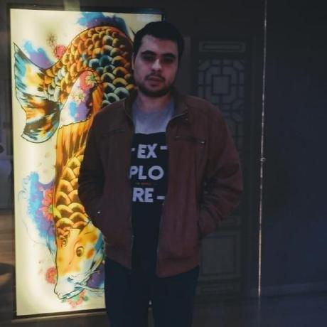

Bernardo Gutman Siqueira
Meu nome é Bernardo, tenho anos e sou um entusiasta por tecnologia e desenvolvimento de software, sempre em busca de novas oportunidades para expandir meus conhecimentos e habilidades. Meu objetivo é me tornar um desenvolvedor fullstack, capaz de trabalhar tanto no front-end quanto no back-end, criando soluções completas, eficientes e inovadoras.
No back-end, estou focado em aprender e utilizar linguagens como Java e PHP, bem como frameworks como o Laravel Springtool. Acredito que a combinação dessas habilidades me permitirá desenvolver aplicações web robustas e escaláveis, que atendam às necessidades.
Meu objetivo é contribuir para projetos onde eu possa aplicar meus conhecimentos e crescer profissionalmente. Estou especialmente interessado em trabalhar em ambientes onde a inovação é incentivada e onde posso fazer a diferença com meu trabalho.
Em resumo, estou determinado a me tornar um desenvolvedor fullstack completo, capaz de enfrentar qualquer desafio e contribuir significativamente para o sucesso dos projetos em que estiver envolvido. Estou ansioso para encontrar uma oportunidade que me permita crescer e desenvolver minhas habilidades, enquanto contribuo para o avanço da tecnologia e da inovação.
Engenharia da Computação
Atualmente, estou cursando Engenharia da Computação na Universidade Católica de Petrópolis, onde estou adquirindo uma base sólida em diversas áreas da computação e engenharia. Na faculdade estou aprendendo e irei aprender uma ampla gama de disciplinas, incluindo:
- Aprendizado de linguagens de programação como C, PHP, Java e Mathlab, além de práticas de desenvolvimento de software e engenharia de software.
- Sistemas Digitais e Arquitetura de Computadores: Estudo de circuitos digitais, microprocessadores, e a arquitetura e organização de computadores.
- Redes de Computadores e Segurança da Informação: Conhecimento sobre protocolos de rede, configuração de redes, e princípios de segurança da informação.
- Inteligência Artificial e Aprendizado de Máquina: Introdução a conceitos de IA, algoritmos de aprendizado de máquina e suas aplicações práticas.
- Eletrônica e Sistemas Embarcados: Projetos de circuitos eletrônicos e desenvolvimento de sistemas embarcados para aplicações específicas.